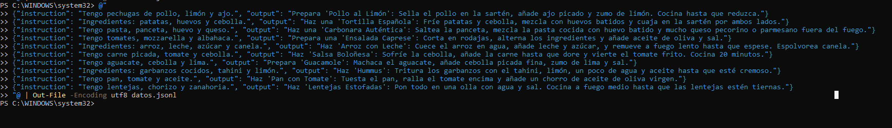
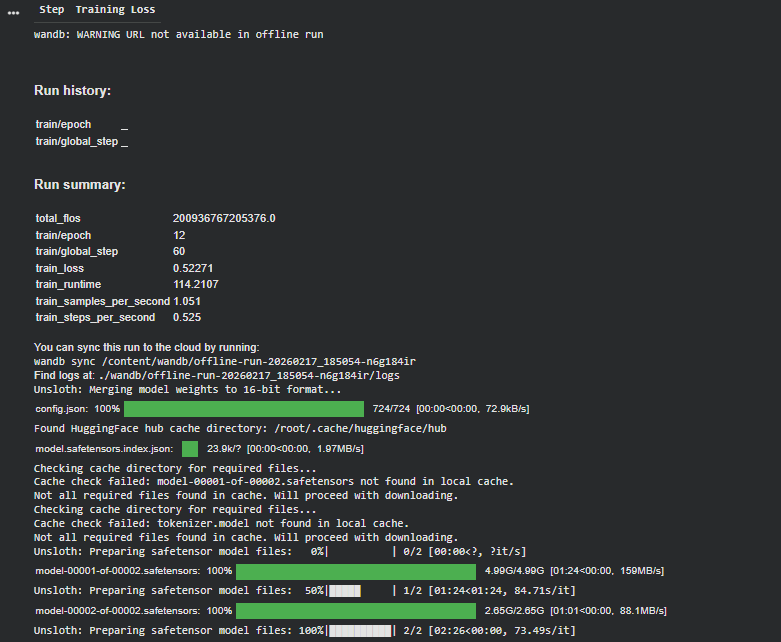

DOCUMENTACIÓN TÉCNICA DE PROYECTO
Chef-Bot LLM Personalizado
Implementación de Fine-Tuning y Cuantización para un modelo de IA específico
1. Diseño del Dataset
Preparación de un conjunto de datos en formato JSONL, esencial para entrenar al modelo en un dominio específico y asegurar respuestas coherentes.

2. Proceso de Fine-Tuning (LoRA)
Detalle del entrenamiento del modelo Phi-3-mini-4k en Google Colab. Se ilustra la optimización de los pesos para capturar el patrón de respuestas deseado.

3. Cuantización a Formato GGUF
Conversión del modelo entrenado a GGUF (4-bit) para una eficiente ejecución local en LM Studio, balanceando el rendimiento y el consumo de recursos.

4. Pruebas y Validación en LM Studio
Confirmación del comportamiento esperado del modelo mediante inferencia local, demostrando la correcta asimilación del conocimiento y la capacidad de respuesta.

Modelo Base: Phi-3-mini-4k
Entorno Inferencia: LM Studio
Parámetro Temperatura: 0.0
Formato Modelo: GGUF Q4_K_M